# list of required packages
required_packages <- c("sf", "terra", "parallel", "data.table", "ggplot2", "scico", "patchwork")
# install missing packages
install.packages(setdiff(required_packages, installed.packages()[, "Package"]))
# load packages
library(sf)
library(terra)
library(data.table)
library(parallel)
library(ggplot2)
library(scico)
library(patchwork)
library(gridEZ2)Tutorial 1: detailed gridEZ example
Suggested citation: Dooley, C.A. (2025). gridEZ Tutorial 1 version 1.0
Tutorial Aim
The aim of this tutorial is to generate and evaluate a bespoke gridded sampling frame for Samoa based on gridded population data, gridded settlement data and administrative unit boundaries. The gridded sampling frame will contain gridded Enumeration Zones (EZs) that can be used for sampling survey units.
Packages
Throughout this tutorial we use several different R packages. The following code loads all the packages you will need. If you have not yet installed the gridEZ2 package, please follow the instructions on the Tutorial Overview page.
Datasets
Before we start with the datasets, create a folder for them.
# check your working directory
getwd()
# you may need to change your working directory to point to the location where the data_wsm folder sits. Use setwd() to change your working directory if needed
# check whether the data folder already exists - if not, create the folder
file_path <- paste0(getwd(),"/data_wsm/")
if (!dir.exists(paste0(file_path))) {
dir.create(file_path)
}Population counts data
For tutorial 1, we will use WorldPop’s population counts data (Bondarenko M. 2025). This global dataset has spatial resolution of 3 arc (approximately 100m at the equator) and has population constrained to grid cells that contain settlement. We will use the data for Samoa with estimated population counts for 2025 (alpha version: R2025A version v1).
More information about the dataset can be found here: https://hub.worldpop.org/geodata/summary?id=76095
You can read in the data directly from the WorldPop server or you can download the data via the link above and then read the data into R.
# Option 1: read in directly from WP server
population_raster <- terra::rast("https://data.worldpop.org/GIS/Population/Global_2015_2030/R2025A/2025/WSM/v1/100m/constrained/wsm_pop_2025_CN_100m_R2025A_v1.tif")# Option 2: read in from file after download
population_raster <- terra::rast(paste0(getwd(),"/data_wsm/wsm_pop_2025_CN_100m_R2025A_v1.tif"))plot(population_raster,main="Population distribution of Samoa (WorldPop data)")
Settlement classification data
We will use Global Human Settlement Layer Settlement Model data (GHS-SMOD) (Pesaresi et al. 2024; Schiavina, Melchiorri, and Pesaresi 2023). To download the data, go to the GHS-SMOD website: https://human-settlement.emergency.copernicus.eu/download.php?ds=smod
First, select the following options on the left hand side:
Epoch = 2025
Resolution = 1km
Coord. system = Mollweide
Second, hover your cursor over the map until you find Tile ID: R11_C2 (the Tile ID is written under the map). Click the tile to download. Unzip the data and add to the data folder called “data_wsm”.
settlement_raster <- terra::rast(paste0(getwd(),"/data_wsm/GHS_SMOD_E2025_GLOBE_R2023A_54009_1000_V2_0_R11_C2/GHS_SMOD_E2025_GLOBE_R2023A_54009_1000_V2_0_R11_C2.tif"))
plot(settlement_raster,main="Settlement categories (GHS-SMOD data)")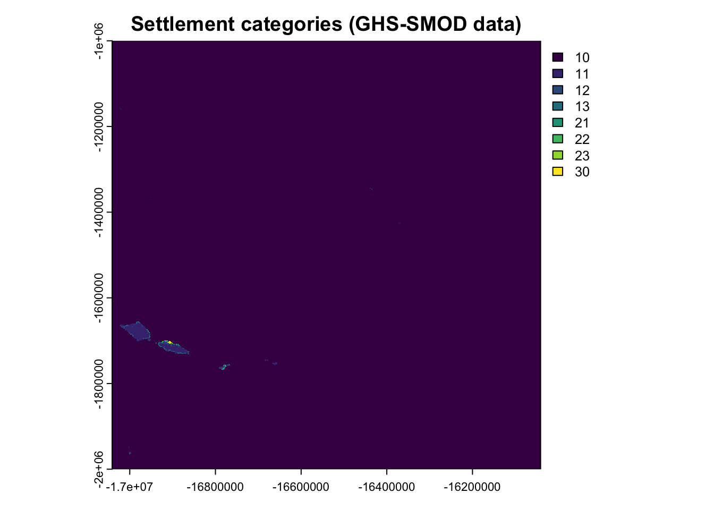
As you can see the GHS-SMOD tile covers a large area. We will crop this data shortly!
Administrative Unit Boundaries
For the administrative boundaries, we’ll use GADM as it has global coverage and has fully harmonized boundaries (GADM 2022). Download GADM boundaries here by selecting Samoa from the drop down and then clicking “Shapefile”: https://gadm.org/download_country.html
We use version 4.1 of the GADM data. If you prefer to use a different version, you can simply edit the file name in the sf::st_read code below. Unzip and add the shapefile to your data_wsm folder.
Read in level 2 administrative units.
admin_sf <- sf::st_read(paste0(getwd(),"/data_WSM/gadm41_WSM_shp/gadm41_WSM_2.shp"))Reading layer `gadm41_WSM_2' from data source
`/Users/clairedooley/Documents/Research/gridEZ/gridEZ_tutorials/data_wsm/gadm41_WSM_shp/gadm41_WSM_2.shp'
using driver `ESRI Shapefile'
Simple feature collection with 43 features and 13 fields
Geometry type: MULTIPOLYGON
Dimension: XY
Bounding box: xmin: -172.8041 ymin: -14.07722 xmax: -171.3977 ymax: -13.43981
Geodetic CRS: WGS 84# look at the list of fields in admin_sf
names(admin_sf) [1] "GID_2" "GID_0" "COUNTRY" "GID_1" "NAME_1" "NL_NAME_1"
[7] "NAME_2" "VARNAME_2" "NL_NAME_2" "TYPE_2" "ENGTYPE_2" "CC_2"
[13] "HASC_2" "geometry" # plot the "GID_2" field which contains the level 2 unit IDs
plot(admin_sf["GID_2"],main="Level 2 administrative units for Samoa (GADM data)")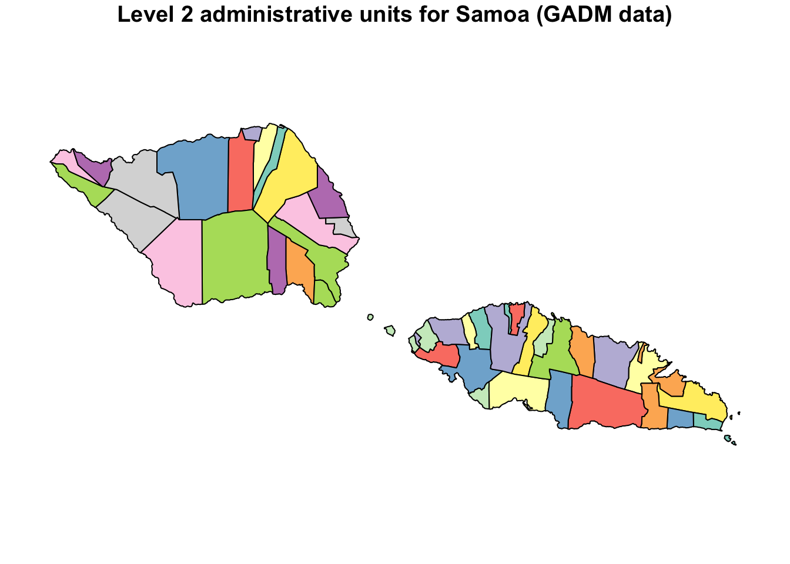
Data Processing
The first processing step is to ensure all data have the same coordinate reference system (CRS).
# identify the CRS of the population raster
r_crs <- terra::crs(population_raster)
# if the strata layers have a different CRS, transform
if(r_crs !=sf::st_crs(admin_sf)){admin_sf <- sf::st_transform(admin_sf, r_crs)}
if(r_crs !=terra::crs(settlement_raster)){settlement_raster <- terra::project(settlement_raster,terra::crs(population_raster),method="near")}Next, we need to convert the sf object containing administrative units into a raster. We do this using the grid of the population raster.
# rasterize admin_sf
admin_raster <- terra::rasterize(admin_sf,population_raster,field="GID_2")
# remove admin_sf object as we no long need it
rm(admin_sf)The population data we are using has been constrained to settled areas. This means that grid cells that are settled have a population count and those that are not settled have an NA value. A sampling frame could be created for either settled areas only or for all areas within the focal region or country. There are pros and cons for each approach. We discuss and compare outputs for sampling frames constrained versus unconstrained to settled areas in a later tutorial. For now, we will create sampling frames that cover the whole of Samoa. As gridEZ recognizes any numerical value as a valid population count to be included in the sampling frame, we replace the NA grid cells, that are within the national boundary, with zero counts. We do this to distinguish grid cells inside the focal region/country from those outside the focal region/country. In this case, the outside of our focal country, Samoa, is sea and we certainly don’t want EZs there!
# replace grid cells of NA population counts that also have non-NA administrative unit values with 0 counts
population_raster[is.na(population_raster)&!is.na(admin_raster)] <- 0Next, we crop the settlement raster to the extent of the administrative units and population rasters.
# crop
settlement_raster <- terra::crop(settlement_raster,admin_raster,snap="out",extend=TRUE)Excellent - now we have three rasters with the same CRS and extents. Let’s re-plot the cropped settlement raster.
plot(settlement_raster, main = "Settlement categories (GHS-SMOD data)")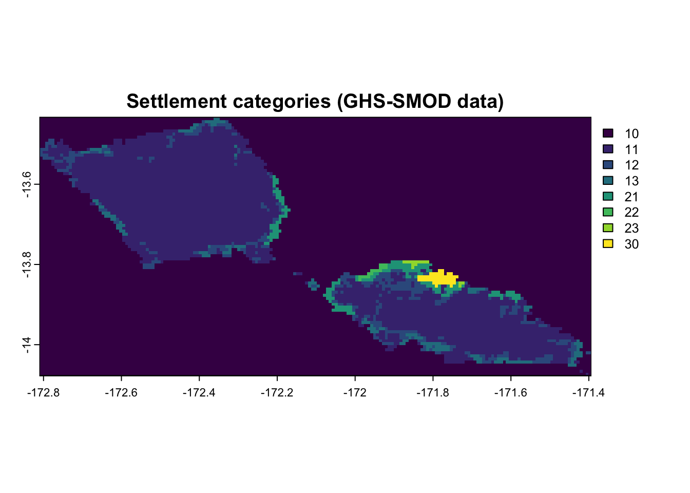
GHS classify areas into categories as shown in Table 1. If you’d like to learn more about the classification process, please see section 2.6.2 of this report: https://human-settlement.emergency.copernicus.eu/documents/GHSL_Data_Package_2023.pdf?t=1727170839
| Code | Category | Merged categories |
|---|---|---|
| 10 | Water | NA |
| 11 | Mostly inhabited | Rural |
| 12 | Dispersed rural | Rural |
| 13 | Village | Rural |
| 21 | Suburban or peri-urban | Urban |
| 22 | Semi-dense town | Urban |
| 23 | Dense town | Urban |
| 30 | City | Urban |
Looking at the settlement map above, we can see there are many instances where small areas of one category are completely surrounded by areas of other categories. Because we use the spatial distribution of these categories to stratify our sampling frame, EZs will never consist of grids cells from more than one category. This means that small areas of one category may have a total population size below the target population per EZ and, because an EZ can not cross strata, will become a single EZ with an undesirably low population size. To remedy this problem, we merge categories to reduce the number of instances this can occur. Table 1 shows how we will merge categories and here is the code to create to update the settlement raster to reflect these merged categories.
# re-define categories
settlement_raster[settlement_raster %in% c(30,23,22,21)] <- 1 # urban
settlement_raster[settlement_raster %in% c(13,12,11)] <- 2 # rural
settlement_raster[settlement_raster == 10] <- NA #water
# re-plot
plot(settlement_raster, main = "Merged settlement categories (GHS-SMOD data)")
The plot shows our new settlement categories with urban and rural areas categorized as 1 and 2, respectively.
The final processing step is to increase the spatial resolution of the settlement raster to match the population and administrative unit rasters. We do this using the terra::resample function.
settlement_raster <- terra::resample(settlement_raster, population_raster, method = "near")Save the three rasters into a folder called “made” inside your “data_wsm” folder.
# check whether the data folder already exists - if not, create the folder
file_path <- paste0(getwd(),"/data_wsm/made/")
if (!dir.exists(paste0(file_path))) {
dir.create(file_path)
}
# save rasters
terra::writeRaster(admin_raster,paste0(file_path,"adminGADM.tif"))
terra::writeRaster(population_raster,paste0(file_path,"popWP.tif"))
terra::writeRaster(settlement_raster,paste0(file_path,"settGHS.tif"))gridEZ: sampling frame generation
The gridEZ function has been designed so that you can either apply pre-defined specifications or specify your own. More information on this can be found in the Tutorial Overview. Below we demonstrate both approaches.
If a sampling frame is being generated for a large geographic area the code will require a significant amount of computer memory. It is therefore good practice to remove R objects not being used and carry out a “garbage collection” before we start.
# remove all objects
rm()
# garbage collection
gc() used (Mb) gc trigger (Mb) limit (Mb) max used (Mb)
Ncells 1682003 89.9 3058031 163.4 NA 3058031 163.4
Vcells 2494422 19.1 10146329 77.5 36864 8669200 66.2gridEZ utilises parallel processing to generate EZs for different strata at the same time. The number of parallel jobs that can be executed will depend on your computing system. You can work this out using the following code.
# total number of cores available on your computer
parallel::detectCores() [1] 14# we advise that you use your total number of cores minus 1 but you could use fewer (unless you only acces to one core, then you should specify 1 processing core)
processing_cores <- max(parallel::detectCores() - 1, 1)
processing_cores[1] 13The gridEZ function reads input rasters straight from file so there is no need to read them into R before executing the function. Instead we define where you would like input rasters to be read in from and also where you would like outputs to be saved. These file pathways can be specified directly in the gridEZ function, however, I find it cleaner and easier to define these file pathways as objects with much shorter names.
# input
file_path_inputs <- paste0(getwd(),"/data_wsm/made/")
# output
# check whether the output folders already exists - if not, create them
file_path_outputs_tuts <- paste0(getwd(),"/results_wsm/")
if (!dir.exists(paste0(file_path_outputs_tuts))) {
dir.create(file_path_outputs_tuts)
}
file_path_outputs <- paste0(getwd(),"/results_wsm/tutorial1/")
if (!dir.exists(paste0(file_path_outputs))) {
dir.create(file_path_outputs)
}Now we can create our sampling frame. We’ll use the “large” EZ specifications so our sampling frame will be made up of EZs with population sizes mostly between 800 and 1,600.
We’ll generate the same sampling frame with two different approaches to demonstrate the different ways gridEZ can be applied: first using the predefined specifications, and then using user-defined specifications.
Note, the run_ID parameter is used to name output files and should be different for each new run of the gridEZ function.
Ok - let’s run gridEZ with pre-defined specifications. To do this we set predefined_EZ_size as TRUE and EZ_target_size as “large”.
# gridEZ function to generate sampling frame with large EZs: pre-defined specs
gridEZ2::gridEZ(population_raster_path = paste0(file_path_inputs,"popWP.tif"),
strata1_raster_path = paste0(file_path_inputs,"adminGADM.tif"),
strata2_raster_path = paste0(file_path_inputs,"settGHS.tif"),
predefined_EZ_size = TRUE,
EZ_target_size = "large",
output_path = paste0(file_path_outputs),
run_ID = "wsm_large",
ncores=processing_cores)In this example we are creating a sampling frame made up of “large” EZs but you can also produce sampling frames with “medium” or “small” EZs using the pre-defined gridEZ specifications. To do this you would replace “large” in the code above with “medium” or “small”.
Now let’s run gridEZ with user-defined specifications. We do this by setting predefined_EZ_size to be FALSE and specifying the parameters target_pop_per_EZ and max_cells_per_EZ.
Note, that the default for predefined_EZ_size is TRUE so if it is not included by the user, gridEZ will ignore target_pop_per_EZ and max_cells_per_EZ and the outputs will have (default) medium sized EZs.
# gridEZ function to generate sampling frame with large EZs: user-defined specs
gridEZ2::gridEZ(population_raster_path = paste0(file_path_inputs,"popWP.tif"),
strata1_raster_path = paste0(file_path_inputs,"adminGADM.tif"),
strata2_raster_path = paste0(file_path_inputs,"settGHS.tif"),
predefined_EZ_size = FALSE,
target_pop_per_EZ = 1200,
max_cells_per_EZ = 2500,
output_path = paste0(file_path_outputs),
run_ID = "wsm_large_ownspecs",
ncores=processing_cores)As you can see from the code above, the user-defined specifications route offers flexibility as target_pop_per_EZ and max_cells_per_EZ can be tailored to specific survey needs.
Great - now we can look at the results!
Evaluating Gridded Sampling Frames
The gridEZ function produces two output files:
.csv with file name beginning “EZ_Pop_Ncells_”. Tabular results for EZs within the sampling frame.
.tif (raster) with file name beginning “EZ_IDs_”. Raster of the sampling frame.
Let’s start by looking at the outputs for the sampling frame generated using the pre-defined settings.
# read in EZs table of your sampling frame
EZ_tab <- read.csv(paste0(file_path_outputs, "EZ_Pop_Ncells_wsm_large.csv"),header=T)
# number of EZs in your sampling frame
nrow(EZ_tab)[1] 305# the first rows
head(EZ_tab) EZ_ID pop N
1 1 947.8968 200
2 2 1257.4823 200
3 3 1163.7940 217
4 4 908.7108 492
5 5 967.2034 1508
6 6 923.8834 668Each row of the table gives the results for each EZ. There are 305 rows, i.e. 305 EZs in the sampling frame. From the top row, we know that the focal EZ has an ID of 1, a population size of 948, and contains 200 grid cells.
To check that the sampling frame generated using the user-defined settings is the same, we can compare EZ tables.
# read in EZs table of your sampling frame
EZ_tab_ownspecs <- read.csv(paste0(file_path_outputs, "EZ_Pop_Ncells_wsm_large_ownspecs.csv"),header=T)
# number of EZs in your sampling frame
nrow(EZ_tab_ownspecs)[1] 305# the first rows
head(EZ_tab_ownspecs) EZ_ID pop N
1 1 947.8968 200
2 2 1257.4823 200
3 3 1163.7940 217
4 4 908.7108 492
5 5 967.2034 1508
6 6 923.8834 668From this we can see that the same sampling frame has been made. The goal of creating the two sampling frames was to demonstrate the two different approached. Now you have everything you need to start creating sampling frames using a variety of target EZ sizes.
Let’s carry on evaluating our sampling frame (we could use either pre- or user-defined outputs here). First, we’ll create a map of the EZs.
# read in your sampling frame raster & plot
EZ <- terra::rast(paste0(file_path_outputs,"EZ_IDs_wsm_large.tif"))
# simple plot
# convert to sf polygons
res_poly <- terra::as.polygons(EZ, dissolve = TRUE)
res_poly <- sf::st_as_sf(res_poly)
# merge the ppolygons and EZ IDs
res_poly <- merge(res_poly,EZ_tab,by="EZ_ID")
# plot EZ polygons coloured by EZ IDs
plot(res_poly[,"geometry"],main="Spatial distribution of EZs")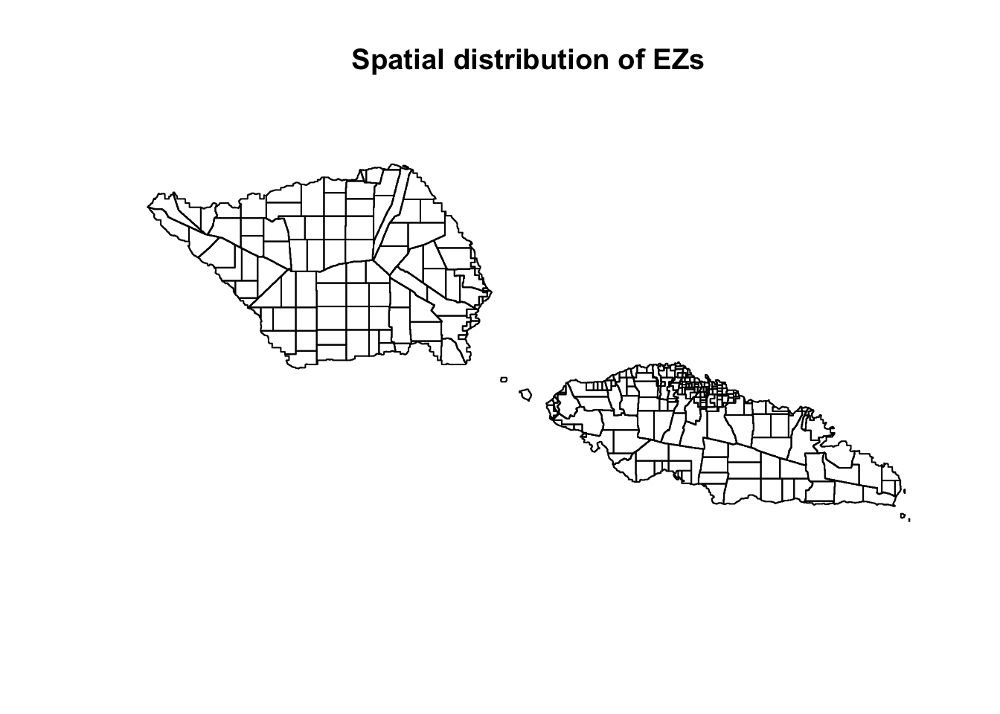
The plot above shows the EZ boundaries. Now let’s look at the population sizes of the EZs.
# plot EZ polygons coloured by population per EZ
plot(res_poly[,"pop"],main="EZ population size")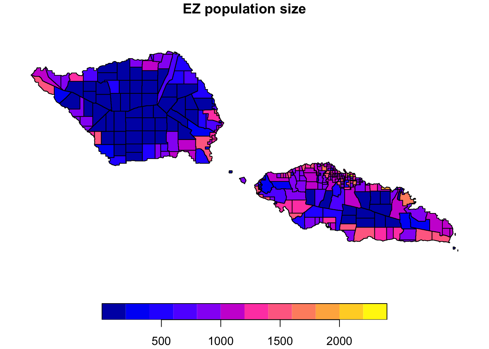
EZs with relatively low population size are located in the centre of the islands where the population is sparse. But if we had a target population per EZ, shouldn’t all the EZs be within the desirable range of 800-1600 for the “large” EZ setting? No - because we also have a maximum geographic size per EZ too! Let’s map the number of grid cells per EZ.
# plot EZ polygons coloured by number of grid cells per EZ
plot(res_poly[,"N"],main="EZ grid cells count")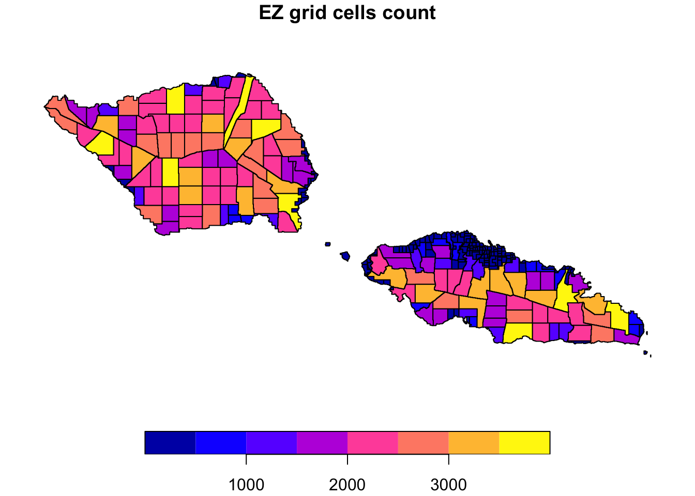
The maximum geographic size per EZ for the large EZ setting is 2,500 grid cells. However, gridEZ allows blocks up to 1.5 times the value given for the maximum geographic size to be accepted as an EZ. So in our example this is 3,750. The gridEZ function allows this leeway above the ideal maximum geographic size per EZ because the requirement to create compact shapes restricts how the algorithm can combine/split blocks of grid cells. Without this extra flexibility, we’d end up with many EZs much smaller than the maximum geographic size that also have low population counts - two undesirable traits. It is better for an EZ to be slightly larger in geographic size if that helps keep its population closer to the target.
If a survey design requires a very strict maximum geographic size of survey units, the max_cells_per_EZ parameter can be adjusted accordingly, e.g. if the hard limit is 1,500 grid cells, the user could set max_cells_per_EZ to be 1,000. In this case, most sparsely populated EZs would have sizes close to 1,000 cells and only some would have sizes close to 1,500.
Now that we’ve looked at the spatial distribution of population and grid cells per EZ, let’s create a scatter plot to look at the two EZ characteristics together.
ggplot(res_poly, aes(x = N, y = pop)) +
# grey scatter plot area for values within acceptable values
annotate("rect",
xmin = 0, xmax = 3750,
ymin = 800, ymax = 1600,
fill = "grey30", alpha = 0.2) +
annotate("rect",
xmin = 1875, xmax = 3750,
ymin = 0, ymax = 800,
fill = "grey30", alpha = 0.2) +
geom_point(alpha = 0.7, size = 3) +
# include threshold lines
geom_hline(yintercept = c(800, 1600),
colour = "red", linetype = "dashed") +
geom_vline(xintercept = c(1875, 3750),
colour = "blue", linetype = "dashed") +
theme_minimal() +
labs(
x = "grid cells per EZ",
y = "pop count per EZ",
title = ""
)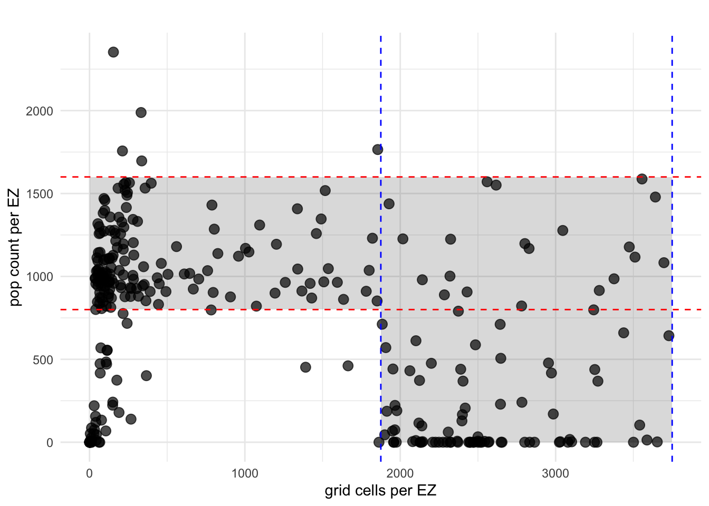
The red horizontal lines indicate the desirable range for population per EZ and the blue vertical lines show the acceptable geographic size range for EZs with undesirably low population. You can see that no EZs are geographically larger than the acceptable maximum grid cells per EZ of 3,750. Therefore, all the EZs that fall between the red horizontal lines meet our criteria for ideal EZs (n = 169). The EZs that fall between the blue vertical lines but below the lower red horizontal line have a desirable geographic size given that they are located in sparsely populated areas. These are acceptable EZs (n=83). Generally, all EZs sitting outside of these areas on the scatter plot, (i.e. outside of the grey areas), are not considered to be acceptable EZs given our criteria.
However, there are a number of restrictions that may lead to the criteria not being met. One example is when a single grid cell has population size greater than the upper end of the desirable population range, e.g. in densely populated areas of cities. The grid based nature of our algorithm means that we can not split individual grid cells and so these become individual EZs. On the scatter plot these EZs would be plotted on the far left (1 grid cell per EZ) above the upper red horizontal line. We can see from our scatter plot that, in this example, there are no single cell EZs with population size greater than 1,600 so no EZs fall into this category.
For our sampling frame, let’s investigate all the EZs outside of the grey areas on our scatter plot. To help with this, we can categorize the EZs by where they sit on the scatter plot using the following code.
res_poly$cat <- NA
# category 1: meets pop and geog criteria
res_poly$cat[res_poly$N<=3750 & res_poly$pop>=800 & res_poly$pop<=1600] <- 1
# category 2: low pop but meets max geog range
res_poly$cat[res_poly$N>=1875 & res_poly$N<=3750 & res_poly$pop<800] <- 2
# category 3: high pop but only 1 cell
res_poly$cat[res_poly$N==1 & res_poly$pop>1600] <-3
# category 4: below max geog range but over pop max and has more than 1 cell
res_poly$cat[res_poly$N>1 & res_poly$pop>1600] <- 4
# category 5: pop & cell count are too low
res_poly$cat[res_poly$N<1875 & res_poly$pop<800] <- 5
res_poly$cat <- as.factor(res_poly$cat)
# re-do scatter plot colour coded by category
# define the colour coding first
cat_cols <- scales::hue_pal()(5)
ggplot(res_poly, aes(x = N, y = pop, colour = cat)) +
geom_point(size = 3, alpha = 0.8) +
scale_colour_manual(values = cat_cols) +
theme_minimal() +
labs(
x = "grid cells per EZ",
y = "pop count per EZ",
colour = "Category",
title = ""
)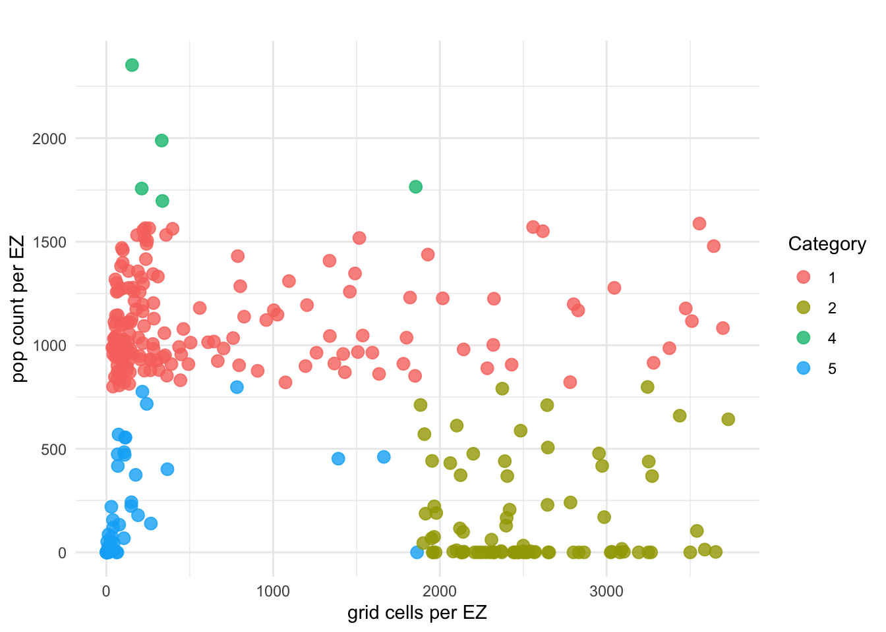
Cateogories 1 and 2 correspond to the EZs we described above. Category 3 corresponds to single celled EZs with high population counts - as mentioned, we don’t have any in this Samoa example. Category 4 consists of EZs whose population size is too big based on our criteria and category 5 consists of EZs whose population size is too small based on our criteria. Let’s count the EZs in each category:
table(res_poly$cat)
1 2 4 5
169 83 5 48 There are 252 EZs that fall into categories 1 and 2 out of a total of 305 EZs in our sampling frame (i.e. 83%. of all our EZs). There are 5 EZs in category 4 and 48 EZs in category 5. We can map the EZs by category to see where they are located.
plot(res_poly["cat"], pal = cat_cols, main="EZs by evaluation category")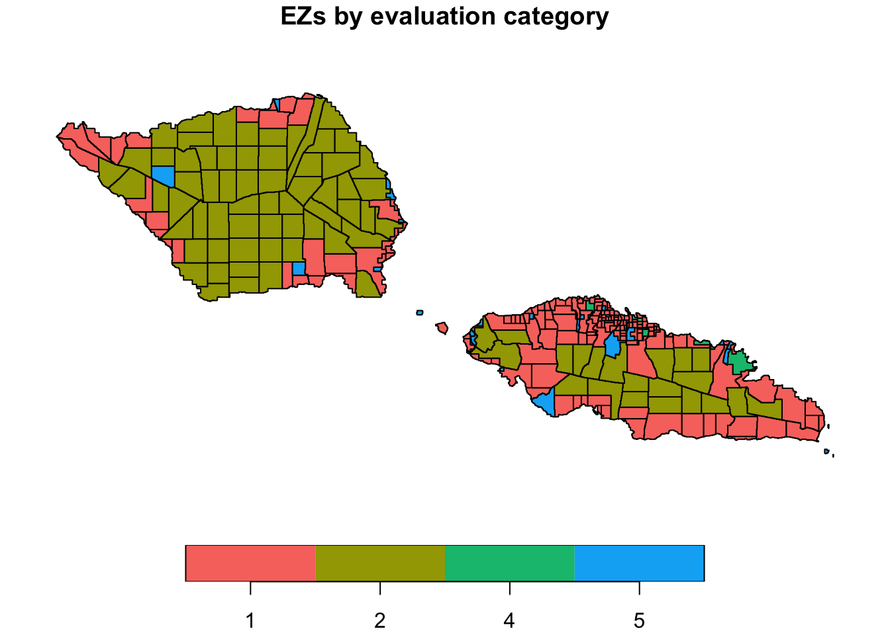
Straight away we can easily see a handful of EZs in category 5. Given their category, can you guess which points in the scatter plot correspond to these? Hint: their geographic size is only slightly below the target grid cells per EZ for sparsely populated areas. Of greater concern are the EZs that are very small in both population and geographic size. Let’s zoom in on an area to take a closer look.
# zoomed in map
plot(res_poly["cat"], pal = cat_cols,ylim=c(-13.96,-13.77),xlim=c(-172.27,-171.95), main="EZs by evaluation category - zoomed in")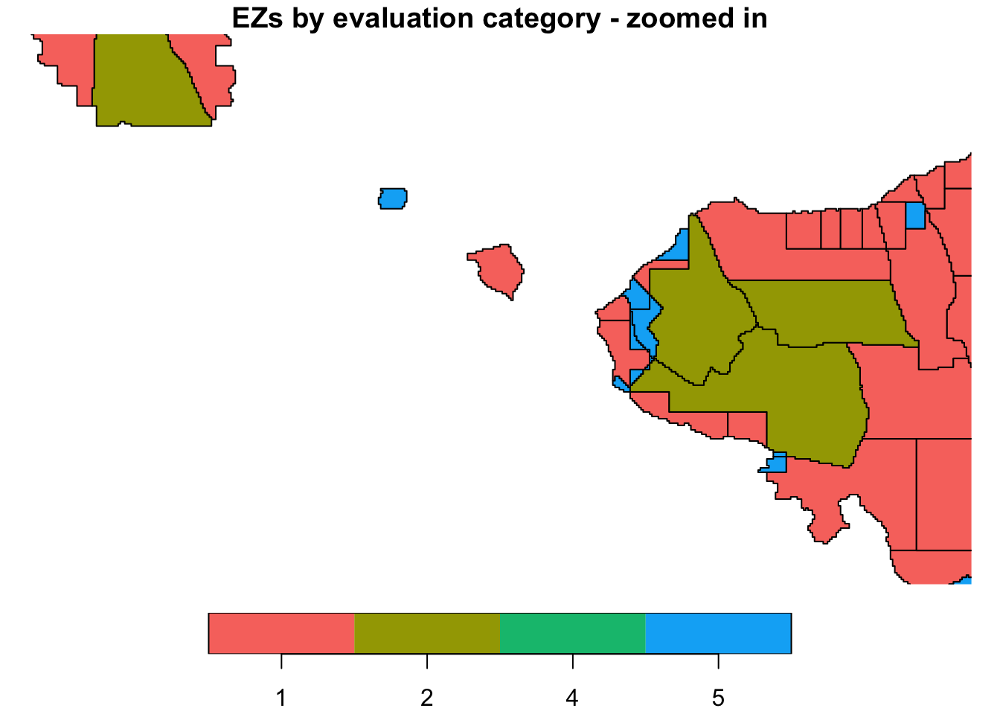
Samoa consists of two main island - Savai’i in the west and Upolu in the east - and many smaller islands. Here we see a tiny island situated between the two main islands that has a single EZ which is in category 5, i.e. population smaller than the target EZ population size. It is generally preferable to have EZs be contiguous in space so that survey field teams do not need to travel through non-survey unit areas to cover a whole unit. The gridEZ algorithm therefore enforces spatial contiguity for EZs. This results in small islands like this one being one single EZ - in most survey designs, this is preferable over several islands being part of the same EZ.
Now let’s focus on the section of Upolu that we see in the above map.
# zoom in more and use ggplot
# define the categories plot
p1 <- ggplot(res_poly) +
geom_sf(aes(fill = cat), colour = "black", linewidth = 0.4) +
scale_fill_manual(values = cat_cols) + # same palette as before
coord_sf(
xlim = c(-172.08, -171.98),
ylim = c(-13.95, -13.82),
expand = FALSE
) +
theme_minimal() +
labs(
fill = "Category",
x = "Longitude",
y = "Latitude",
title = ""
)
# read in the settlement raster and admin polygons
settlement_raster <- terra::rast(paste0(file_path_inputs,"settGHS.tif"))
admin_sf <- sf::st_read(paste0(getwd(),"/data_WSM/gadm41_WSM_shp/gadm41_WSM_2.shp"))Reading layer `gadm41_WSM_2' from data source
`/Users/clairedooley/Documents/Research/gridEZ/gridEZ_tutorials/data_wsm/gadm41_WSM_shp/gadm41_WSM_2.shp'
using driver `ESRI Shapefile'
Simple feature collection with 43 features and 13 fields
Geometry type: MULTIPOLYGON
Dimension: XY
Bounding box: xmin: -172.8041 ymin: -14.07722 xmax: -171.3977 ymax: -13.43981
Geodetic CRS: WGS 84# plot these survey strata
# convert the raster into a data.frame first
settlement_df <- as.data.frame(settlement_raster, xy = TRUE, na.rm = FALSE)
settlement_df$GHS_SMOD_E2025_GLOBE_R2023A_54009_1000_V2_0_R11_C2 <- as.factor(settlement_df$GHS_SMOD_E2025_GLOBE_R2023A_54009_1000_V2_0_R11_C2)
# define strata plot
p2 <- ggplot() +
geom_raster(data = settlement_df, aes(x = x, y = y, fill = GHS_SMOD_E2025_GLOBE_R2023A_54009_1000_V2_0_R11_C2)) +
geom_sf(data = admin_sf, fill = NA, colour = "black", linewidth = 0.7) +
scale_fill_scico_d(palette = "nuuk", na.value = "transparent") +
coord_sf(
xlim = c(-172.08, -171.98),
ylim = c(-13.95, -13.82),
expand = FALSE
) +
theme_minimal() +
labs(
fill = "Value",
x = "Longitude",
y = "Latitude",
title = ""
)
p1 + p2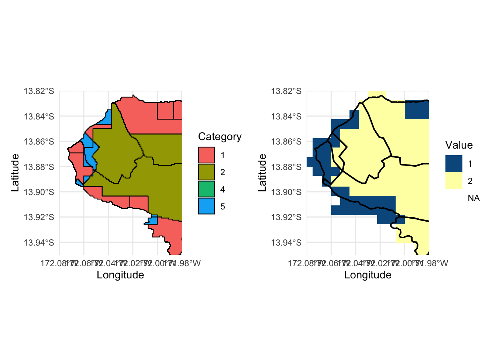
In the left hand plot we see several category 5 EZs. The right hand plot shows our two strata layers. The overall spatial stratification for the sampling frame is a combination of the two, i.e. stratum 1 = settlement type 1 in admin unit A; stratum 2 = settlement type 2 in admin unit A; stratum 3 = settlement type 1 in admin unit B; stratum 4 = settlement type 2 in admin unit B; etc. The overall spatial stratification delineates what we consider “uncrossable” boundaries and gridEZ therefore does not allow EZs to cross different strata. EZs are always contained within one stratum. This stratification approach is important for survey design but can lead to EZs with small population and small geograhpic size, depending on how the layers used to define the overall stratification intersect with one another. In our example, the overall stratification based on GHS-SMOD and GADM administrative units essentially consists of little psuedo islands within the landmass and explains most of the category 5 EZs that we see in the left hand plot above.
The gridEZ algorithm balances compactness of EZ shapes against meeting the population and geographic criteria. In several cases, this can lead to a decision not to add or split a block of grid cells and instead call it good as an EZ. This is the likely explanation for the remaining EZs in categories 4 and 5.
Creation of table for survey sample selection
Surveys require a table of survey sampling frame units (here, these are EZs) to sample from. We currently have a table of EZs and their population counts, but as many surveys will want to sample a specific number of units per stratum (stratified sampling) we need to add the corresponding stratum for each EZ.
We can do this by spatially linking the EZ IDs raster with the two strata rasters. The result is a table containing the information from the three rasters.
# read in the strata raster
admin_raster <- terra::rast(paste0(file_path_inputs,"adminGADM.tif"))
settlement_raster <- terra::rast(paste0(file_path_inputs,"settGHS.tif"))
# the extent of the EZ raster is defined by the presence of EZs and may be different to the extent of the input files which was set by the population raster
# remember EZs are created for grid cells with non-NA values across all 3 input rasters, not everywhere there is population
# because of this we extend the EZ raster to match the input rasters
EZ <- terra::extend(EZ,admin_raster)
# create a table of EZ strata values
# we need to create a table with vectors of values in each raster
# as the admin_raster contains categories, we want the category labels rather than their corresponding numeric value
admin_cats <- terra::cats(admin_raster)[[1]]
admin_labels <- admin_cats[match(admin_raster[], admin_cats[,1]),2]
# as we defined the distance categories by numeric values, we can directly use those raster values
EZ_strata <- data.table::data.table(EZ[],
admin_labels,
settlement_raster[])
# set column names, change as needed
names(EZ_strata) <- c("EZ_ID","strata1","strata2")
# reduce table down to a single row per EZ
EZ_strata <- na.omit(EZ_strata)
EZ_strata <- unique(EZ_strata)Let’s have a look at the top of the table.
# look at the top of the table
head(EZ_strata) EZ_ID strata1 strata2
<num> <char> <num>
1: 98 WSM.5.4_1 2
2: 96 WSM.5.3_1 2
3: 100 WSM.6.1_1 2
4: 105 WSM.6.2_1 2
5: 101 WSM.6.1_1 2
6: 99 WSM.5.4_1 2Great - looks good. Now we can merge it with our EZ table that we read in from the .csv file produced by gridEZ so that we have EZ population and strata information all in one table.
# merge
EZ_tab <- merge(EZ_tab,EZ_strata,by="EZ_ID")
# check number of rows/EZs
nrow(EZ_tab)[1] 305# look at the top of the table
head(EZ_tab) EZ_ID pop N strata1 strata2
1 1 947.8968 200 WSM.1.1_1 1
2 2 1257.4823 200 WSM.1.1_1 1
3 3 1163.7940 217 WSM.1.1_1 1
4 4 908.7108 492 WSM.1.1_1 2
5 5 967.2034 1508 WSM.1.1_1 2
6 6 923.8834 668 WSM.1.1_1 2Excellent - now we have a table with the following characteristic for each EZ in our sampling frame:
ID
population count
grid cell count
ID of strata 1 (administrative unit)
ID of strata 2 (settlement category)
Finally, it may be useful to count the EZs in each strata. We can summarise this in a table as follows.
table(EZ_tab$strata1,EZ_tab$strata2)For visual inspection we can also plot it.
ggplot(EZ_tab, aes(x = strata1, fill = as.factor(strata2))) +
geom_bar(position = "stack") +
labs(
title = "Count of EZs per stratum",
x = "Admin. unit",
y = "Count",
fill = "Settlement type"
) +
theme_minimal() +
theme(
axis.text.x = element_text(angle = 90, vjust = 0.5, hjust = 1)
) +
scale_fill_discrete(labels = c("1" = "urban", "2" = "rural"))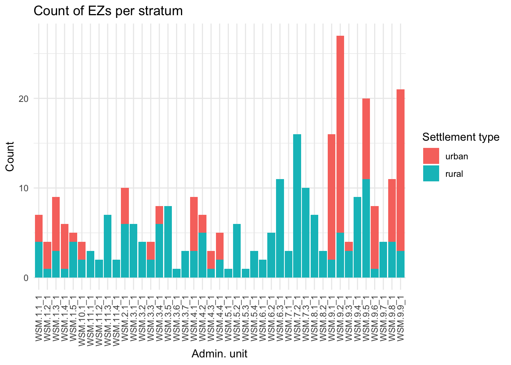
Summary
This tutorial has covered:
preparing example datasets suitable for the
gridEZR functiongenerating gridded sampling frames using two
gridEZoptions:applying pre-defined specifications
applying user-defined specifications
summarising output sampling frames
evaluating sampling frame EZs
creating a table suitable for survey sample selection, i.e. containing EZ ID, population count and strata IDs
Feedback
We are very interested to know:
how survey practitioners, researchers and data collectors are using gridEZ
how these tutorials can be updated or improved
Please use the link below to provide any comments or feedback.
References
Bondarenko M., Tejedor-Garavito N., Priyatikanto R. 2025. “Constrained Estimates of 2015-2030 Total Number of People Per Grid Square at a Resolution of 3 Arc (Approximately 100m at the Equator) R2025A Version V1.” WorldPop - School of Geography; Environmental Science, University of Southampton. https://doi.org/10.5258/SOTON/WP00839.
GADM. 2022. “GADM Database of Global Administrative Areas, Version 4.1.” https://gadm.org/download_country.html.
Pesaresi, Martino, Marcello Schiavina, Panagiotis Politis, Sergio Freire, Katarzyna Krasnodębska, Johannes H. Uhl, Alessandra Carioli, et al. 2024. “Advances on the Global Human Settlement Layer by Joint Assessment of Earth Observation and Population Survey Data.” International Journal of Digital Earth 17 (1). https://doi.org/10.1080/17538947.2024.2390454.
Schiavina, Marcello, Michele Melchiorri, and Martino Pesaresi. 2023. “GHS-SMOD R2023A - GHS Settlement Layers, Application of the Degree of Urbanisation Methodology (Stage I) to GHS-POP R2023A and GHS-BUILT-S R2023A, Multitemporal (1975-2030).” European Commission, Joint Research Centre (JRC). https://doi.org/10.2905/A0DF7A6F-49DE-46EA-9BDE-563437A6E2BA.